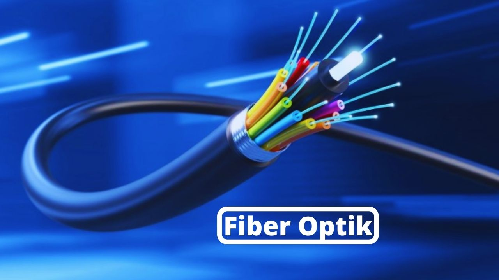

TELEKOMUNIKASI

TELEKOMUNIKASI
Telekomunikasi adalah teknik pengiriman atau penyampaian informasi jarak jauh dari suatu tempat ke tempat lain. Informasi tersebut bisa berupa tulisan, suara, gambar, ataupun objek lainnya.
Secara garis besar, teknologi telekomunikasi mulai pertama kali berkembang pada awal abad ke-19, melalui perangkat elektronik (masih menggunakan listrik statis pada saat itu) yang bernama telegraf.[1] Seiring perkembangannya, teknologi telekomunikasi kemudian berkembang dalam beragam macam variasi bentuknya sesuai kegunaan dan mekanisme kerjanya seperti telepon, televisi, radio dan Teknologi informasi serta banyak lagi lainnya.
Sejarah
Telekomunikasi telah memainkan peran penting dalam interaksi sosial masyarakat dunia. Namun demikian, perangkat seperti sistem telepon pada awalnya diiklankan dengan penekanan pada dimensi praktis perangkat (seperti kemampuan untuk melakukan bisnis atau memesan layanan rumah) yang bertentangan dengan dimensi sosial. Baru pada akhir 1920-an dan 1930-an dimensi sosial perangkat menjadi tema utama dalam iklan telepon. Promosi baru mulai menarik emosi konsumen, menekankan pentingnya percakapan sosial dan tetap terhubung dengan keluarga dan teman. Sejak itu peran telekomunikasi dalam hubungan sosial menjadi semakin penting. Dalam beberapa tahun terakhir, popularitas situs jejaring sosial telah meningkat secara dramatis. Situs-situs ini memungkinkan pengguna untuk saling berkomunikasi serta mengirimkan foto, acara, dan profil untuk dilihat orang lain. Dengan ini, dapat memainkan peran penting terutama dalam kehidupan sehari-hari.
Fiber Optik
Serat optik adalah saluran transmisi atau sejenis kabel yang terbuat dari kaca atau plastik yang sangat halus dan lebih kecil dari sehelai rambut, dan dapat digunakan untuk mentransmisikan sinyal cahaya dari suatu tempat ke tempat lain. Sumber cahaya yang digunakan biasanya adalah laser atau LED.
1. Kabel ini berdiameter kurang lebih 120 mikrometer. Serat optik memiliki 3 lapisan utama yang terdiri dari core, cladding dan coating.
2. Cahaya yang ada di dalam serat optik tidak keluar karena indeks bias dari kaca lebih besar daripada indeks bias dari udara, karena laser mempunyai spektrum yang sangat sempit. Kecepatan transmisi serat optik sangat tinggi sehingga sangat bagus digunakan sebagai saluran komunikasi.